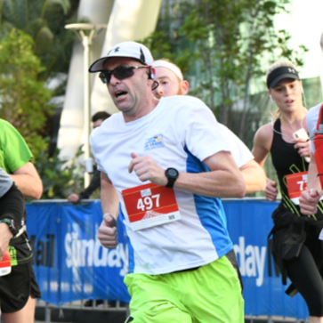
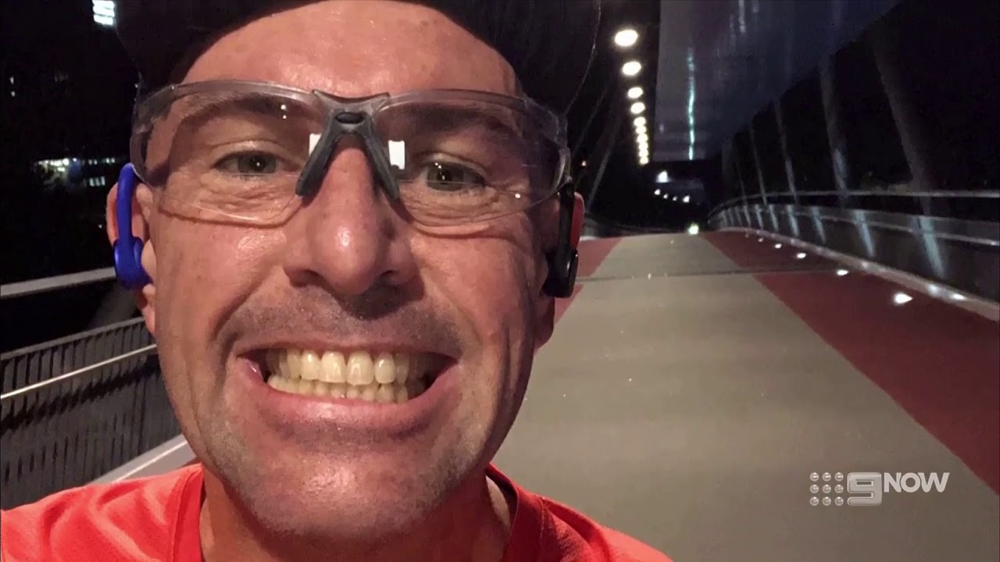
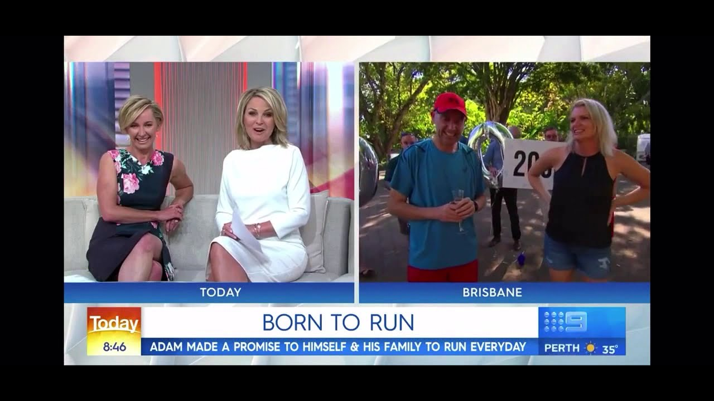
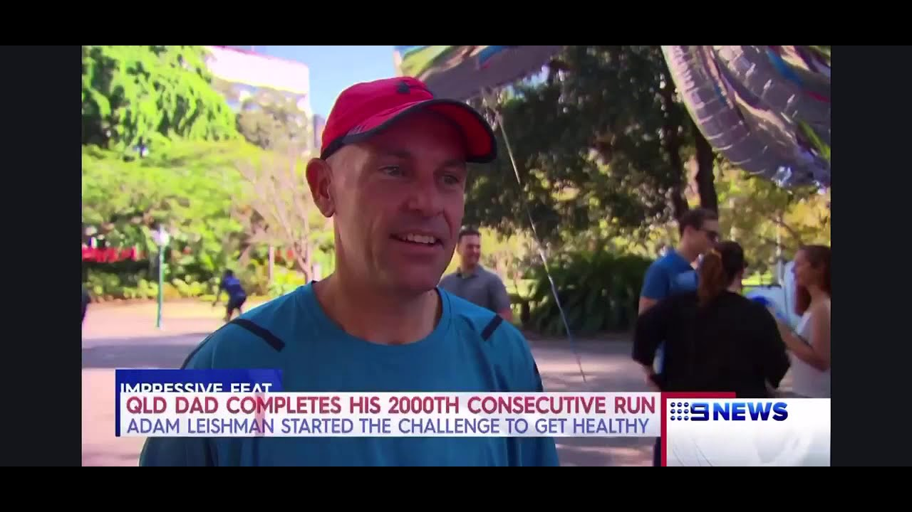

4,435
Consecutive days
Adam Leishman · A completed running record
19 May 2014 — 9 July 2026
For 4,435 consecutive days, running was part of every day of my life. This is the record of that chapter: how it began, what it required, and why it ended.

01
4,435
Consecutive days
31,883
Kilometres recorded
5:39
Average pace per km
42.6
Longest run in km
70
Kilograms lost before and during the early story
12
Years, one month, twenty-one days
Dates are counted inclusively. Distance, pace and longest-run figures are retained from Adam's streak summary and supported by the full run archive.
02
It started on 19 May 2014 as a commitment to health, made to myself and to my family. There was no twelve-year plan. There was one rule: run today.
Running had become part of a much larger change in my life. I had lost 70 kilograms, and the daily run gave that change a clear, repeatable shape. The early runs mattered because they were done, not because they were fast, long or remarkable.
One day accumulated into a week, then a month, then years. The streak was never a single heroic effort. It was a long record of ordinary days kept in sequence.
03
The run had to fit around the life that already existed. The rule did not pause for convenience.
01
02
03
04
04
A simple commitment to run that day became a rule carried into every day that followed.
By then, daily running was no longer an experiment. It had become part of the structure of life.
The 2,000th consecutive run was marked in Brisbane and reported by Nine News.
The number recorded thousands of ordinary decisions as much as it recorded the runs themselves.
A little over a year remained in a streak whose ending could not yet be known.
The last run closed the record after twelve years, one month and twenty-one days.
05
Project 20 · 2024–2025
The goal was simple to state and difficult to reach: run a sub-20-minute 5K at parkrun.
Project 20 began as a coached 20-week plan and became a 30-episode podcast record of the work, tiredness, setbacks and adjustments required to train seriously while protecting the daily streak. The original schedule extended well beyond twenty weeks. At the end of 2024, the barrier was still there.
After a break and changes to strength work, long runs and recovery, I finally broke twenty minutes shortly before turning 50. I then ran under twenty minutes for five consecutive weeks. The final 5K personal best was 18:47.
Listen to the Project 20 archive
5K
18:47Project 20's final mark10K
39:43Personal bestHalf marathon
1:28:14Personal bestMarathon
3:45:08Debut and personal bestSydney Marathon · 2025
I went to Sydney with an A plan of running under three hours. Even the fallback plans were well inside my 3:45:08 personal best. A hamstring problem was already present, and the race became a question of how long it could be managed. At 27.8 kilometres, with the 3:15 pacer still behind me, I stepped off the course. It was the first time I had withdrawn from a race. It did not end the streak, which continued for almost another year, but it was an important part of the injury history that followed.
06
The streak ended through two falls, several days apart, and a hamstring that had already been compromised.
During a run, I clipped a raised road reflector, tripped, folded forward and overstrided. We believe that first fall tore one of the proximal hamstring tendons away from the bone. I continued the streak, not yet knowing the full extent of the damage.
Several days later, on Thursday 9 July, I completed my daily run. Later that day I had an ordinary slip and fall—not while running. With the hamstring already damaged, the second tendon did not have a chance. It tore away from the bone. The injury was diagnosed as a complete proximal hamstring avulsion, and urgent surgery followed.
07
4,435
I had already completed the day's run when the slip and fall brought the streak to its end.
There was no missed alarm and no forgotten run. Day 4,435 was completed. The second tendon injury later that Thursday made another run physically impossible and surgery urgent. The following day was the first in more than twelve years without a run. That absence did not erase what came before it.
08
“The streak became part of how I measured time. It held discipline, pride, pressure, routine and identity. It was significant because it was lived one ordinary day at a time.”
The number is large, but the meaning sits in the small decisions beneath it. Leaving the house. Finding the time. Adjusting the plan. Beginning again each morning without pretending yesterday's run could count for today.
It was a substantial chapter of my life. It is complete. This page exists to preserve it accurately, including the effort, the cost, the injury and the decision that brought it to an end.
09

Video record

Media archive

Milestone record
This private draft preserves selected material from the original Flowpage. Further photographs, run exports, certificates and media records can be added after review.